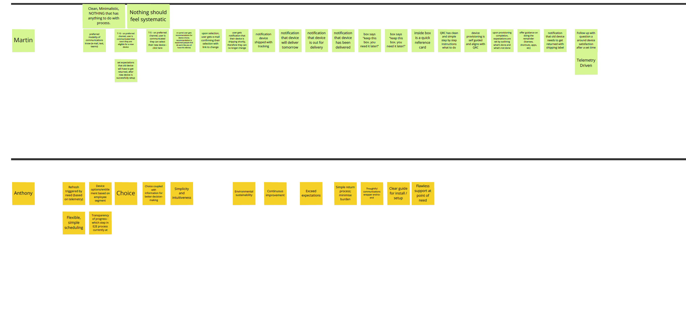

Where complex systems
meet clear design.
Principal UX Designer leading AI and enterprise product design. 15+ years across complex systems, healthcare, and global enterprise.
A platform strategy for Copilot, agents, orchestration, and governed AI experiences at enterprise scale.
A three-pillar strategy to reduce friction across device refresh, support, and touchpoints for 400,000+ global employees.

A qualitative research framework for interpreting unstructured employee feedback at global scale.
A competitive UX audit of self-checkout experiences for Walmart, using heatmaps and task analysis.

NCQA-certified health assessment across 5,000 Walmart kiosks reaching 30M+ users annually.

A multi-year WCAG 2.0 and CFR 382 remediation across kiosk and web platforms ensuring equitable access.